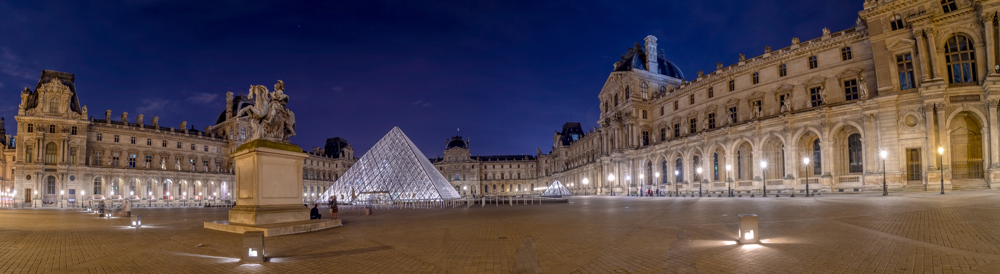

Eiffel Tower Lit Up from the Trocadéro at Night
Golden ironwork glowing against midnight sky — striking in a sleek black or antique brass frame for dining rooms and studies.
Destination Wall-Art Guide · Paris, France
Haussmann limestone, evening gold along the Seine, gilded museum salons, and unhurried Montmartre street corners. Photographed in Paris by Elie Cohen and ready for instant digital download from $8.

Balanced between statement night panoramas, classical gilded interiors, and vertical architectural portraits.
Golden ironwork glowing against midnight sky — striking in a sleek black or antique brass frame for dining rooms and studies.

Full-width Neo-Renaissance facade with clean Parisian sky — made for panoramic framing above a headboard or living-room sofa.

Grand marble symmetry and Beaux-Arts detailing — elevates hallways, dressing areas, and classic European-inspired spaces.

Soft spring foliage and symmetrical palace terraces — brings airy Parisian calm to workspaces and sunlit breakfast nooks.

Soaring Baroque geometry in a vertical format — tailored for narrow wall columns, bookcases, and tall entryway frames.

Classic neighborhood bistro charm with effortless Parisian warmth — a natural favorite for kitchens, coffee bars, and dining walls.

Historic stone vaults meeting industrial invention — distinctive wall art for home offices, libraries, and creative studios.

Boiserie paneling and quiet museum light in a vertical frame — pairs seamlessly with muted neutrals and vintage brass hardware.
Download immediately after checkout and print with your favorite local framer or online fine-art printer.
Combine one wide panorama (Hôtel de Ville or Luxembourg) with two vertical architectural studies (Invalides and Carnavalet) in matching thin black aluminum or champagne-gold frames.
Night frames like the Eiffel Tower shine on baryta or luster archival paper to hold deep shadows; daytime stonework looks timeless on smooth matte fine-art rag.
Four sizes from $8 (web) to $28 (6 MP print-ready) and $65 (full-resolution master), delivered with personal print rights right after checkout.
Collector’s note
Get three high-resolution wallpapers from Andalusia, Tuscany, and Paris right away, plus an occasional note when a new series opens.
Your wallpapers are ready